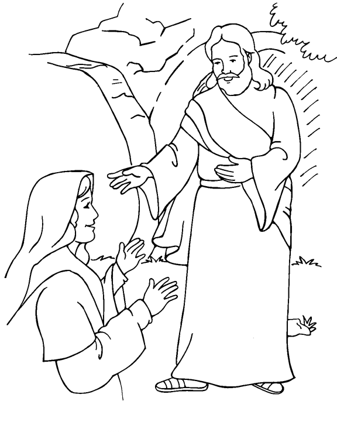

This week's lessons: Acts 10:34-43 or Isaiah 25:6-9, Psalm 118:1-2, 14-24, 1 Corinthians 15:1-11 or Acts 10:34-43, John 20:1-18 or Mark 16:1-8
Middle-School Pew-work
|
43Joseph of Arimathaea, an honourable
counsellor, which also waited for the kingdom of God, came, and
went in boldly unto Pilate, and craved the body of Jesus. |
47And Mary Magdalene and Mary the
mother of Joses beheld where he was laid. |
5And entering into the sepulchre, they
saw a young man sitting on the right side, clothed in a long
white garment; and they were affrighted. |
|
 |
When have you seen that God was working through some unusual event? ________________________________________________________________________________________________________________________________________________________________________________________________________________________________________________________________________________________________________________________________________________________________________________________________________________________________________________________________ |
|
|---|---|---|
|
|
How does it make you feel, and respond, when you recognize God's handiwork? ___________________________________________________________________________________________________________________________________________________________________________________________________________________________________________________________________________________________________________________________________________________________________________________________________________________________________________________________________________________________________________________________________________________________ |
|
2nd Sunday of Easter: Acts 4:32-35, Psalm 133, 1 John 1:1-2:2, John 20:19-31